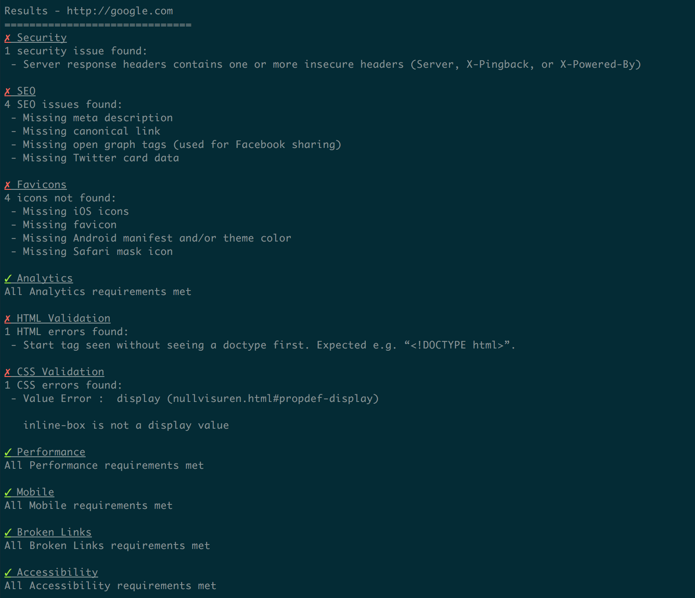
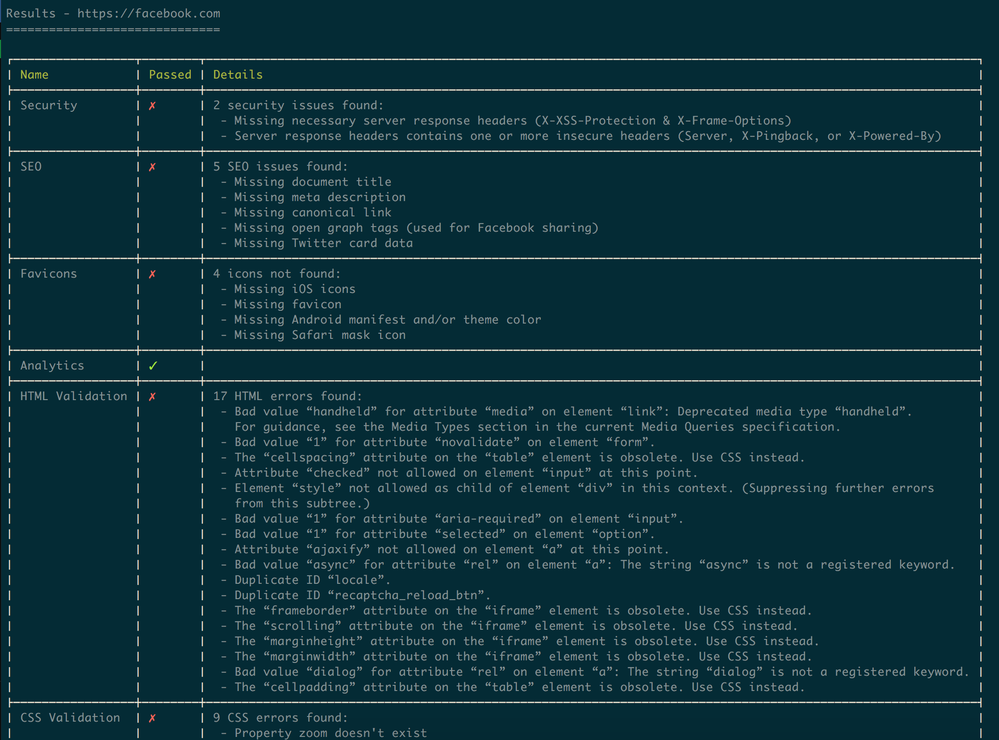
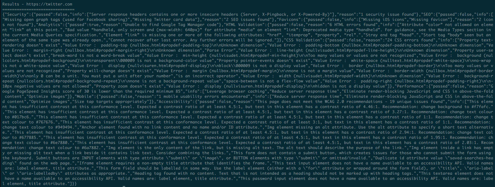

launch-checklist


Automated launch checklist tests
Launch Checklist is a tool for automating the various tasks that go into launching a website.
Installation
You can install Launch Checklist locally or globally
Local Installation and Usage
Install Launch Checklist locally if you'd like to include it as part of your project's build system:
$ npm install --save-dev launch-checklistYou can then run Launch Checklist against a URL by referencing the local installation:
$ ./node_modules/.bin/launch-checklist --url http://website.comGlobal Installation and Usage
Installing Launch Checklist globally allows you to run program directly from the command line without referencing a local directory. To install globally:
$ npm install -g launch-checklistThen execute the command, providing a valid URL:
$ launch-checklist http://website.comCommand Line Interface
The simplest way to use Launch Checklist is from the command line:
Usage
$ launch-checklist [options]
Options
-f, --format <string> Output format [stylish|table|json] - default: stylish
Examples
launch-checklist --format json http://google.comProgrammatic Usage
You can also include Launch Checklist in your project to validate websites using the Node.js API:
const launchChecklist = require('launch-checklist');
launchChecklist({
url: 'http://website.com',
format: 'json'
}, (err, data) => {
// ...
});Options
url
Default: null
A valid URL string to run the checklist against. This option is required and the URL must be publicly available in order for all tests to work. If the URL references a local or protected server, the tests will not execute.
format
Default: stylish
The output format of the results object. Options currently include:
-
stylish(default) -
table -
json
Callback
Callback function after all tests have been executed. This gets two parameters:
-
error- If the checklist experiences an error the given value will be astring. Otherwise, the first parameter of the callback will benull. -
data- If no errors,objectis given as the second parameter containing the supplied options and the results of the tests.
Tests
Check the wiki to see all tests performed by this module:
- Accessibility
- Analytics
- Broken Links
- CSS Validation
- Desktop Performance
- Favicons
- HTML Validation
- Mobile Performance/Usability
- SEO
- Server Security
License
Apache-2.0 © Erik Nielsen